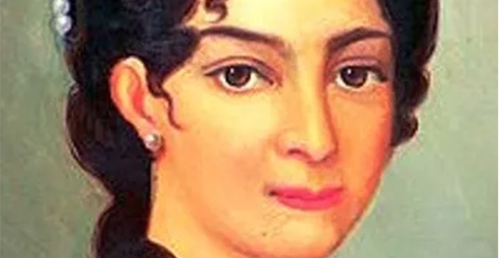
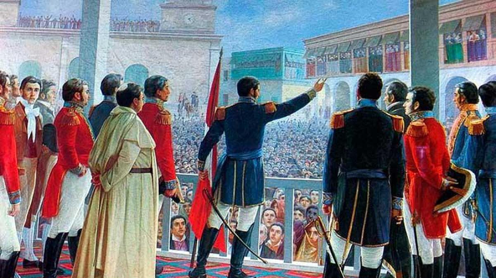

María de los Remedios de Escalada (1797-1823)
¿Quién fue?
Fue una mujer patriota de Buenos Aires, esposa del General José de San Martín. Es reconocida por haber bordado la Bandera de los Andes y por donar todas sus joyas para equipar al ejército libertador.

Su importancia hoy
Representa a todas las mujeres que hicieron posible la Independencia desde su hogar, con esfuerzo y sacrificio. Se la recuerda cada 3 de agosto.

Conocer su legado